Gestão de rotas, entregas, ocorrências e evidências
Versão do manual: 2.0 — 18/09/2026
Este manual descreve a versão atual do sistema. A disponibilidade de telas e botões depende do perfil, da filial e dos serviços habilitados para a empresa.
O Adimax Log acompanha a operação desde o planejamento da carga até o encerramento da rota. O fluxo principal é:
criar ou importar a rota → atribuir motorista e veículo → calcular/validar o trajeto → registrar chegada ao CD → liberar a carga → sair do CD → atender as paradas → tratar devoluções → fechar a rota.
Cada ação operacional relevante gera data e hora e compõe o histórico auditável. O sistema também controla quem pode enxergar e alterar cada registro.
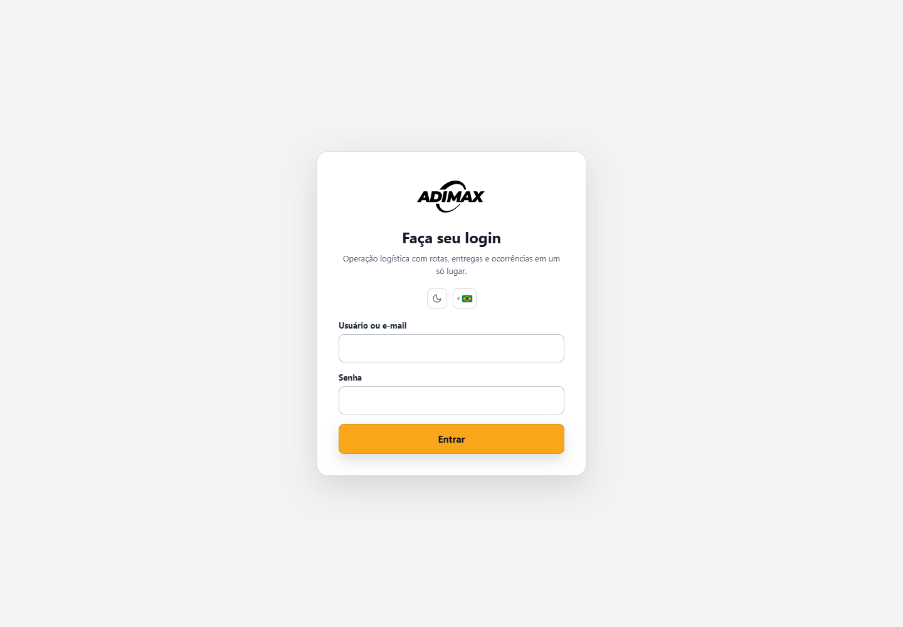
Na tela de login também é possível alternar tema claro/escuro e idioma português do Brasil/Portugal.
As listas operacionais se atualizam periodicamente. Filtros e formulários em edição são preservados sempre que possível.
| Perfil | Alcance usual | Principais atividades |
|---|---|---|
| Administrador global | Todas as empresas | Configuração completa, perfis e correções administrativas |
| Gestor Brasil / gerente | Empresa | Gestão operacional, cadastros, usuários e relatórios |
| Torre de controle | Empresa | Monitoramento, roteirização e tratamento de ocorrências |
| Operador logístico | Filial, salvo permissão ampliada | Rotas, cadastros e operação diária |
| Auditor | Empresa | Painel, galeria, relatórios e auditoria |
| Motorista | Somente rotas atribuídas | Executar rota, anexar evidências e informar ocorrências |
| Cliente | Somente paradas vinculadas | Consultar rotas e acompanhamento permitido |
O nome do perfil define os módulos; o escopo define quais registros aparecem. A ausência de um botão normalmente indica falta de permissão, serviço desabilitado ou etapa operacional ainda não liberada.
Quando uma transportadora já cadastrada começa a atender outra filial, crie somente o novo vínculo. Não duplique a empresa, seus masters, motoristas ou veículos.
A exigência de aprovação pode ser ativada separadamente para motoristas e veículos em cada filial. Com a regra desligada, um cadastro completo, ativo e disponibilizado fica operacional automaticamente. Com a regra ligada, novos cadastros ou vínculos ficam pendentes até aprovação de um usuário Adimax autorizado.
Os estados são independentes: ativo/inativo informa a situação cadastral; pendente/aprovado/reprovado informa a aprovação. Desligar a exigência não reativa um cadastro bloqueado. Ao ativar a regra, escolha entre aplicar somente aos novos vínculos ou revisar também os existentes, sem interromper viagens em andamento.
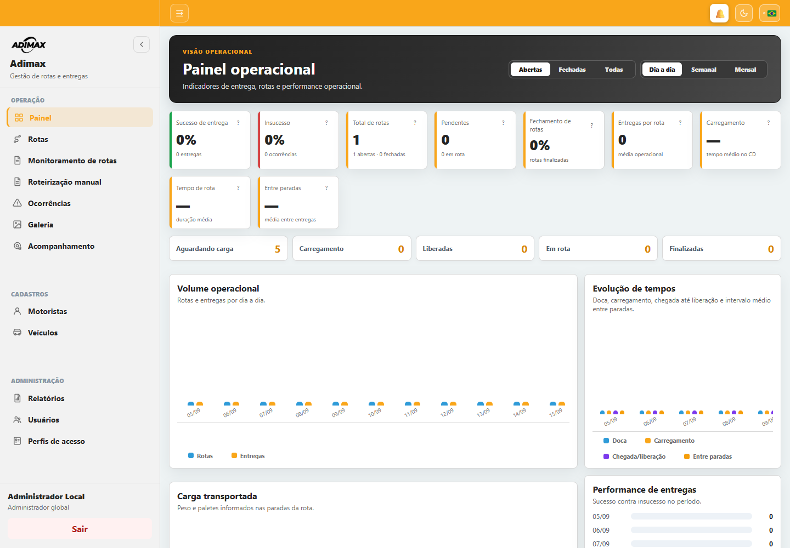
O Painel resume a operação. Escolha o período, a referência de semana quando exibida e a situação Abertas, Fechadas ou Todas.
Principais indicadores:
O botão ? de um cartão explica o indicador. Os filtros afetam apenas os dados do período e da situação selecionados.
| Indicador | Regra aplicada |
|---|---|
| Entregas totais | quantidade de paradas das rotas filtradas |
| Sucessos | paradas com situação entregue |
| Insucessos | paradas com situação falha ou devolvido |
| Taxa de sucesso | sucessos ÷ (sucessos + insucessos) × 100 |
| Taxa de insucesso | insucessos ÷ (sucessos + insucessos) × 100 |
| Taxa de fechamento | rotas finalizadas ÷ rotas do filtro × 100 |
| Média de entregas por rota | total de paradas ÷ total de rotas |
| Peso total | soma do peso em kg de todas as paradas |
| Paletes totais | soma dos paletes de todas as paradas |
| Tempo de carregamento | fim do carregamento − início do carregamento |
| Chegada até liberação | liberação do operador − chegada ao CD |
| Tempo de rota | encerramento − saída efetiva do CD, somente em rotas finalizadas |
| Tempo entre paradas | diferença entre o encerramento de uma parada e o da parada seguinte |
| Entrega atrasada | parada pendente/em rota cuja data prevista já passou |
As médias ignoram registros sem os dois horários necessários e resultados negativos. Tempos são exibidos em minutos e arredondados para uma casa decimal.
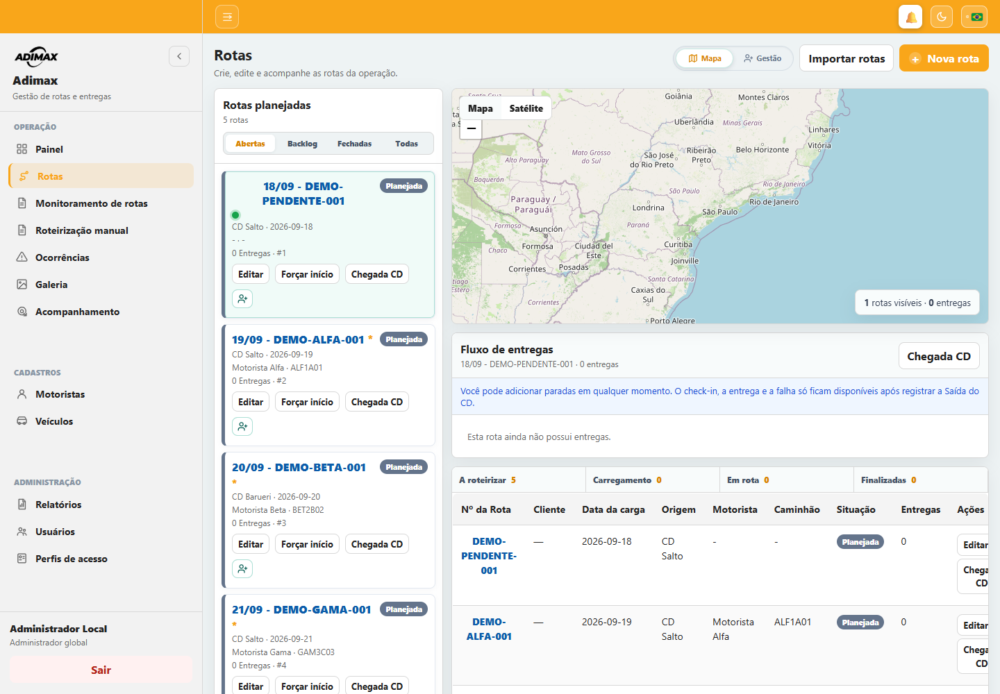
Esta é a tela central da operação. Ela possui as visões Mapa e Gestão, busca e filtros de rotas abertas, pendências anteriores, fechadas ou todas.
| Rota | Significado |
|---|---|
| Planejada | criada, ainda sem início no CD |
| Em carregamento | chegada ao CD registrada |
| Liberada | operador liberou a carga |
| Em rota | veículo saiu do CD |
| Finalizada | todas as etapas foram encerradas |
| Cancelada | rota cancelada por usuário autorizado |
| Parada | Significado |
|---|---|
| Pendente | ainda não iniciada |
| Em rota | check-in registrado |
| Entregue | entrega confirmada com comprovante |
| Recusado/Falha | atendimento sem sucesso, com motivo e evidência |
| Devolvido | mercadoria retornou total ou parcialmente |
Motorista e veículo podem ser atribuídos depois. Cadastros bloqueados ou inativos não podem receber novas atribuições.
Cada linha deve identificar a transportadora por ID único e nome. O ID controla a identidade sem depender de grafia; o nome fica disponível para conferência e distribuição da rota aos responsáveis. O sistema valida se:
Se a identificação estiver ausente, divergente ou sem vínculo com a filial, a linha permanece pendente para correção pela Adimax e não aparece para a transportadora.
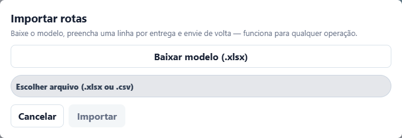
Importações futuras atualizam dados autorizados, mas preservam ações operacionais já realizadas. Rotas também podem vir de integração autorizada.
Ao selecionar uma rota, o mapa mostra origem, paradas e linha calculada. O painel Fluxo de entregas mostra a sequência e a situação. Cores e marcadores distinguem o andamento; um endereço inválido pode deixar a parada sem ponto no mapa.
Na visão Gestão, localize a rota e atribua motorista e veículo. O campo tem busca textual e só aceita uma opção válida da lista. O sistema valida filial, situação do cadastro e conflitos operacionais.
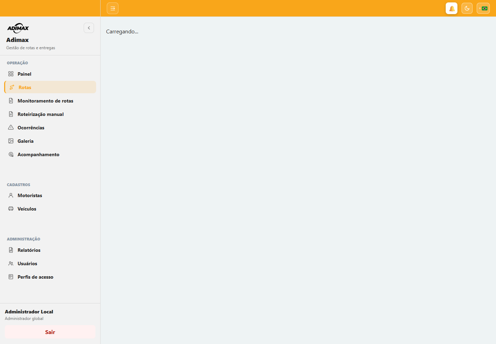
A tela Abrir rota reúne:
Execute na ordem apresentada:
As etapas internas antigas de entrada em doca/início/fim de carga e o comando separado de saída podem existir em registros históricos ou integrações, mas a tela atual da JMD mede chegada até liberação e registra liberação/saída juntas. Um botão desabilitado indica etapa anterior pendente, rota encerrada ou falta de permissão.
O sistema permite concluir a parada atual mesmo se o check-in tiver sido esquecido, mas não permite pular uma parada anterior ainda aberta. Em várias notas do mesmo cliente/endereço, a progressão considera o grupo operacional.
Fechar rota só fica válido quando as paradas estiverem resolvidas. Se houver devolução, também é necessário anexar o comprovante de entrega no CD. O fechamento pode solicitar os comprovantes pendentes em lote. Reabrir rota é reservado a quem possui permissão de correção.
Administradores podem corrigir situação, limpar marcações, anexos ou eventos. Toda correção exige justificativa e fica registrada em auditoria.
Toda rota possui uma filial responsável e uma transportadora executora. O administrador global vê todas; colaboradores Adimax veem as filiais autorizadas; usuários de transportadora veem somente as rotas da própria empresa nas filiais permitidas; motoristas veem somente as rotas atribuídas a eles.
Somente o Administrador global Adimax pode trocar a transportadora:
A transportadora anterior perde o acesso e a nova passa a enxergar os dados operacionais necessários. Motorista e veículo são desvinculados para nova atribuição. A alteração e o log são gravados juntos, registrando rota, filial, antes/depois, responsável, data/hora, motivo, atribuições anteriores e situação. O histórico operacional não é apagado nem transferido de autoria.
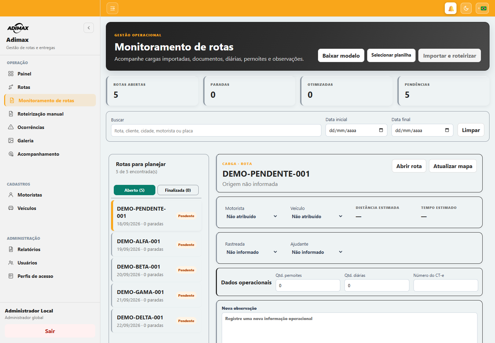
Use esta tela para preparar e supervisionar cargas:
Funções de roteirização:
O roteirizador envia origem, destinos intermediários, destino final e categoria do veículo. A distância recebida em metros é dividida por 1.000 e arredondada para uma casa decimal. A duração recebida em milissegundos é dividida por 60.000 e arredondada para minutos.
Classificação automática do veículo:
Endereços idênticos consecutivos são agrupados para evitar trecho de distância zero. Se algum endereço não puder ser localizado, a estimativa completa é retirada até a correção.
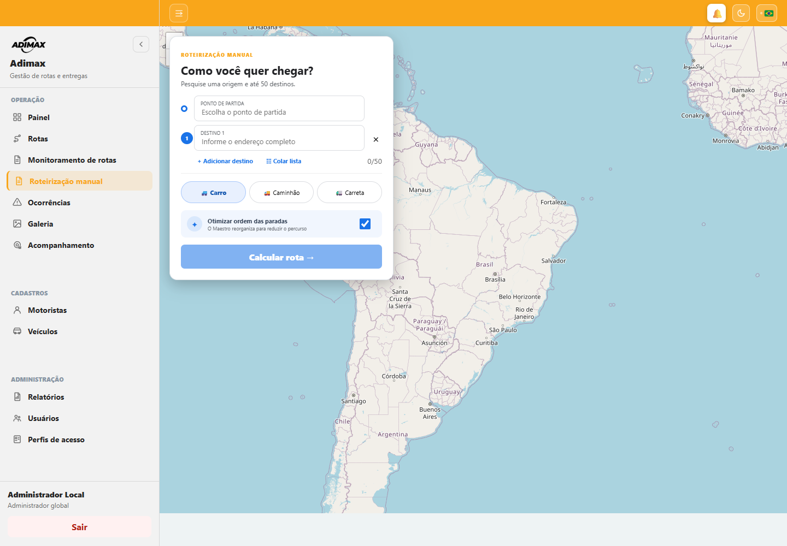
Serve para simular um trajeto sem criar uma rota operacional.
O resultado apresenta ordem calculada, distância, duração e mapa conforme resposta do serviço de roteirização.
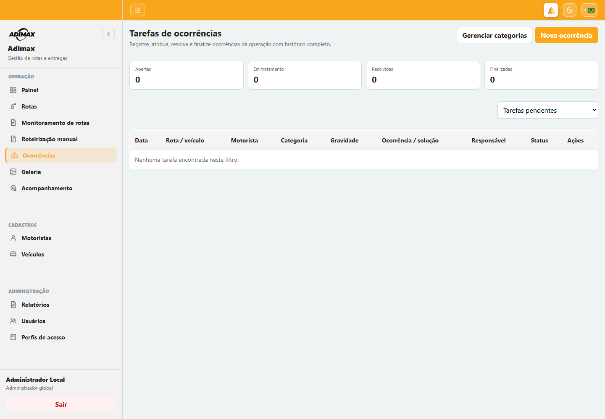
A tela controla problemas e tarefas operacionais com histórico completo.
Quando o aparelho permite, latitude e longitude acompanham o registro. O motorista pode editar ou excluir uma ocorrência própria enquanto ela estiver aberta.
Gestores podem Assumir, mover entre aberta, em tratamento, resolvida, finalizada ou cancelada e registrar solução/notas. Resolver ou finalizar exige descrição do que foi feito. O histórico mostra data/hora, etapa, responsável e observação.
Gerenciar categorias permite criar, renomear, inativar e reativar opções sem apagar o histórico.
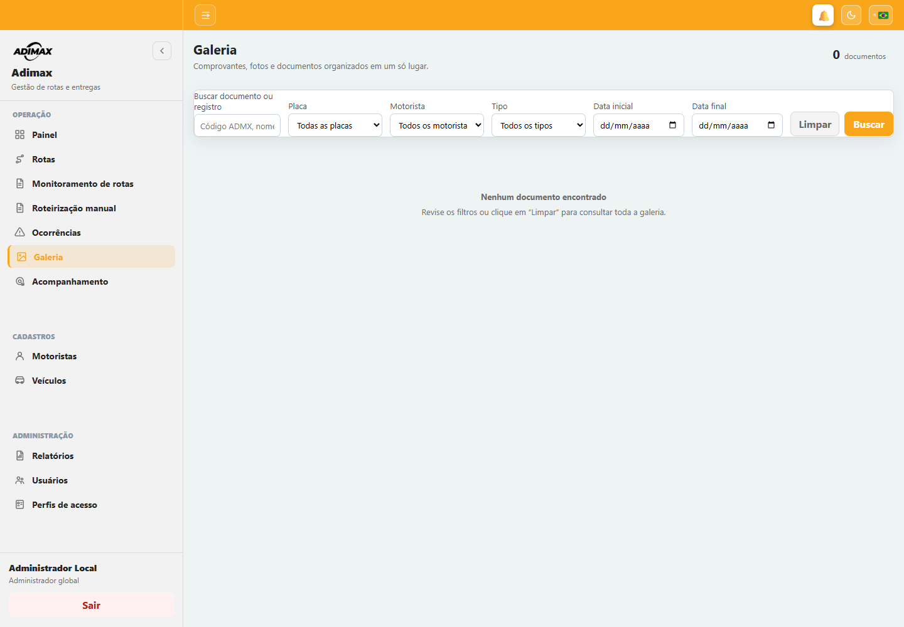
Centraliza comprovantes de entrega/devolução e outros anexos disponíveis na versão contratada.
Filtre por placa, motorista, tipo e intervalo de datas. Abrir documento baixa ou exibe o arquivo protegido. Administrador global pode excluir comprovante de entrega ou solicitar uma nova evidência ao motorista.
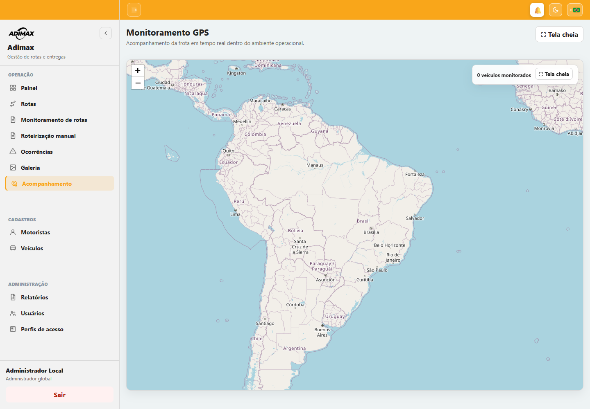
O mapa mostra veículos monitorados, rota, motorista, placa, última velocidade e horário da posição. Use Tela cheia para a central de monitoramento. Dados antigos ou ausência de posição podem indicar aparelho sem sinal, permissão negada ou rota fora do estado ativo.
O GPS inicia automaticamente quando existe rota em andamento/rota do dia elegível e termina após o fechamento. A posição é enviada em torno de cada 120 segundos, com latitude, longitude, precisão, velocidade e data/hora. O Android mantém uma notificação “Rastreamento ativo durante sua rota” enquanto o serviço está em segundo plano.
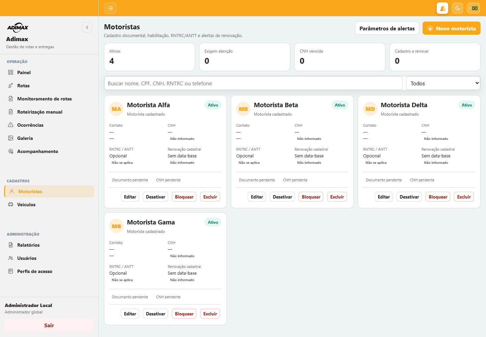
A tela mostra totais, cadastros com alertas e documentos próximos do vencimento.
Funções:
Desativar retira o cadastro de novas operações; Bloquear representa impedimento explícito e exige motivo. Prefira essas ações a excluir registros com histórico.
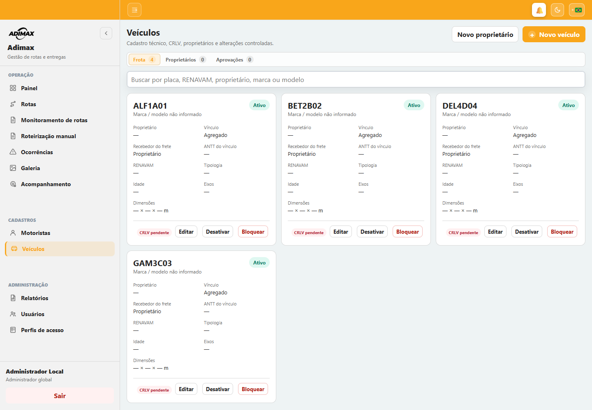
A tela possui três áreas:
Ao cadastrar, informe placa, tipo, filial, frota própria ou agregado, proprietário e quem recebe o frete. Para terceiro, selecione a transportadora. Anexe o CRLV quando solicitado. Situações e motivos seguem a mesma lógica de ativar/desativar/bloquear.
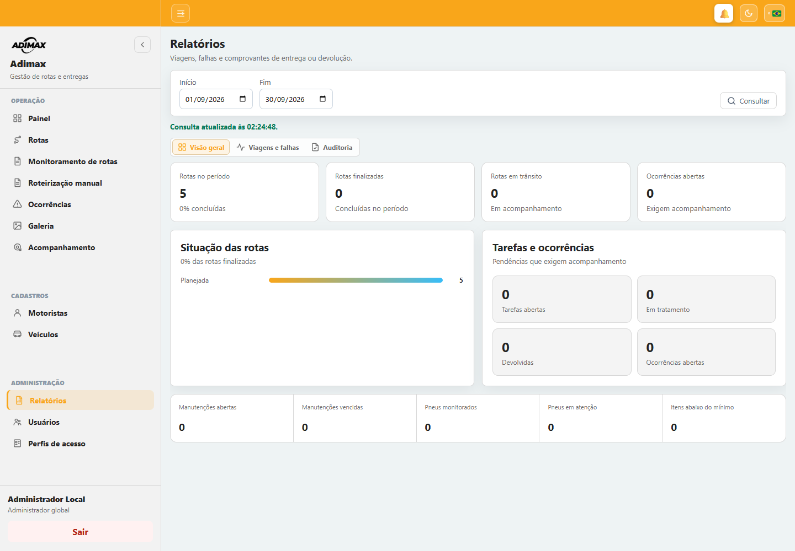
Defina Início e Fim, selecione Consultar e navegue pelas abas:
Downloads disponíveis conforme perfil:
No resumo gerencial, a taxa de conclusão é rotas finalizadas ÷ total de rotas × 100. Valores vazios produzem zero, evitando divisão inválida.
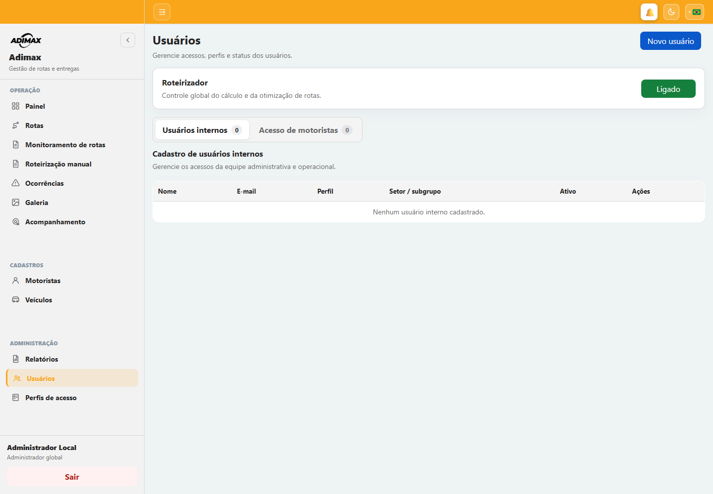
A tela separa Equipe interna e Acessos de motoristas.
Para criar acesso:
Também é possível editar, ativar, desativar, bloquear/desbloquear e Redefinir senha. O usuário não pode bloquear a si próprio. O controle global do roteirizador pode ser ligado/desligado por administrador autorizado.
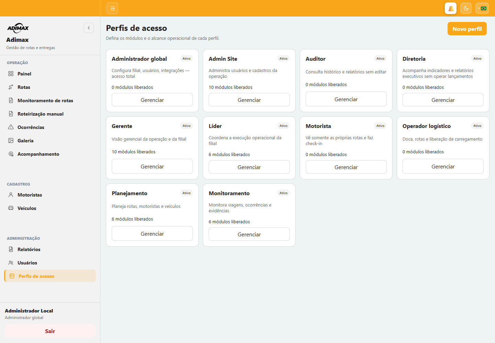
Disponível ao administrador global. Novo perfil cria código, nome, descrição e conjunto de módulos. Gerenciar altera permissões e situação. Um perfil inativo deixa de estar disponível para novas concessões, sem apagar o histórico.
Módulos atuais: Painel, Rotas, Monitoramento, Roteirização, Ocorrências, Galeria, Acompanhamento, Motoristas, Veículos, Relatórios e Usuários. Escopos de empresa/filial/atribuição continuam aplicados mesmo quando o módulo está liberado.
O aplicativo do motorista mantém o trabalho operacional quando o aparelho perde a conexão. As ações elegíveis são salvas em uma fila persistente no próprio aparelho, inclusive fotos e comprovantes.
Cada ação possui um identificador único. Se a rede cair depois de o servidor processar uma ação, a repetição é reconhecida e não gera dois check-ins ou duas entregas. A fila permanece mesmo se o aplicativo for fechado ou o aparelho reiniciado.
Não saia da conta, não limpe os dados do aplicativo e não desinstale o app enquanto houver ações pendentes. Se alguma sincronização falhar por regra de negócio, toque no aviso para tentar novamente após corrigir a condição ou procure a operação.
Em caso de falha persistente, informe ao suporte: usuário, código da rota, horário, tela, ação executada e uma captura da mensagem — nunca envie a senha.